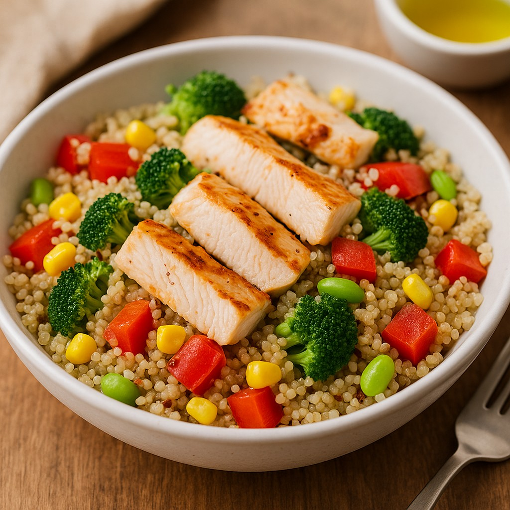
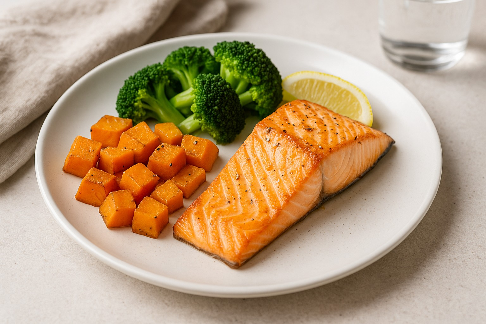

Recetas saludables
Platos fáciles, ricos y equilibrados. Porciones orientativas y opciones de intercambio.

Desayuno: Yogur con frutas y avena
Ingredientes: 1 yogur natural, 1 fruta chica, 2 cdas. de avena.
Preparación: Mezclar yogur y avena, sumar fruta.

Almuerzo: Ensalada tibia de quinoa con pollo
Ingredientes: ½ taza de quinoa cocida, pollo grillado, verduras, 1 cda. de aceite.
Preparación: Saltear quinoa y verduras, agregar pollo y aceite.

Merienda: Tostadas integrales con palta y tomate
Ingredientes: 2 tostadas integrales, ½ palta, tomate, condimentos.
Preparación: Untar palta, sumar tomate y condimentar.

Cena: Salmón al horno con batatas y brócoli
Ingredientes: Filete chico de salmón, ½ batata, brócoli, 1 cdta. de aceite, limón.
Preparación: Hornear batata 15–20 min; sumar salmón y brócoli 10–12 min. Finalizar con limón.